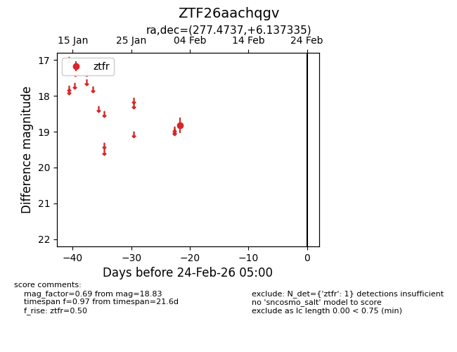
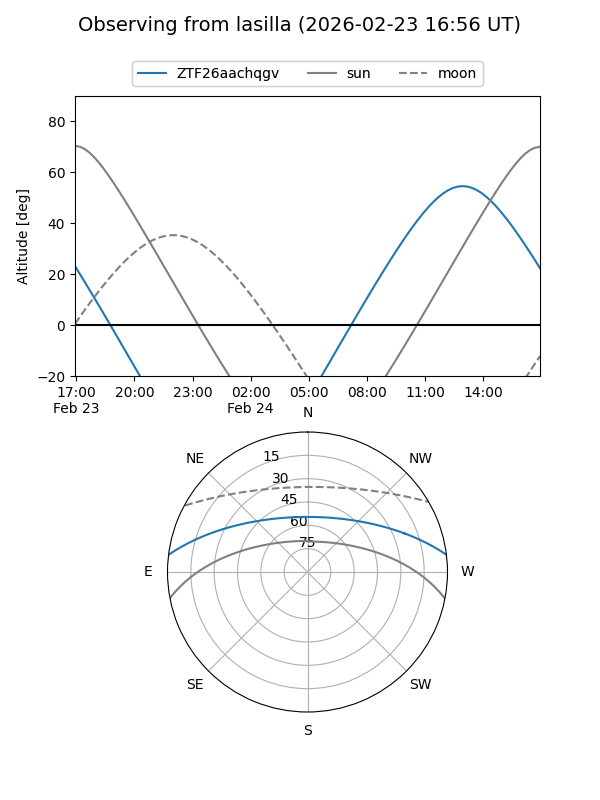
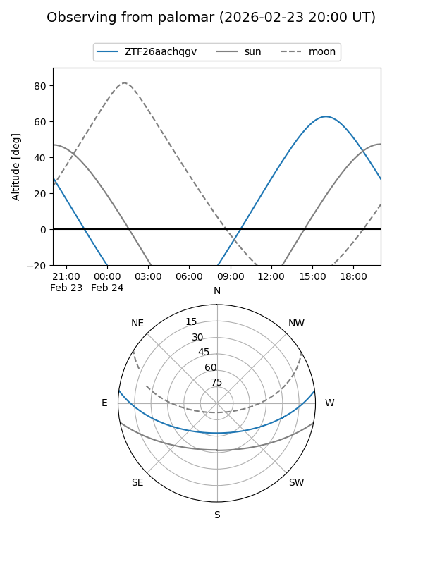

ZTF26aachqgv
Target ZTF26aachqgv at 2026-02-24 09:08
Aliases and brokers:
FINK: link
Lasair: link
ALeRCE: link
alt names
ZTF26aachqgv (ztf,fink_ztf)
Coordinates:
equatorial (ra, dec) = 277.4737,+6.13734
equatorial (HMS+DMS) = 18:29:53.69,+06:08:14.41
galactic (l, b) = (35.9734,+7.57401)
Flags:
Photometry:
last ztfr=18.83
1 ztfr detections
Lightcurve

Visibility


Additional plots